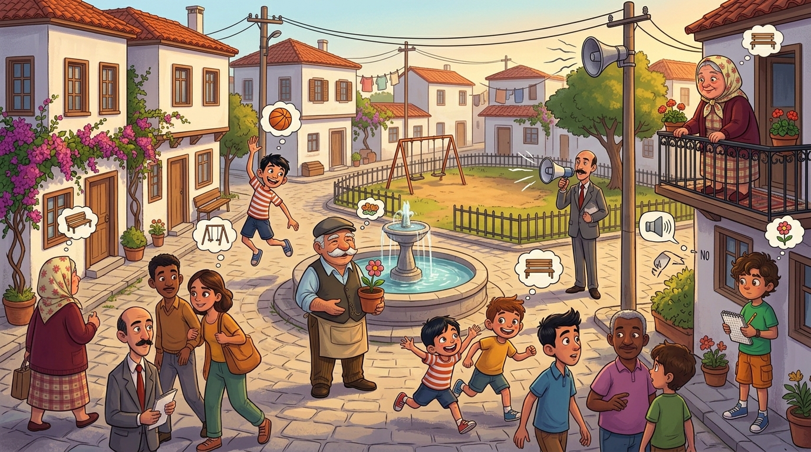
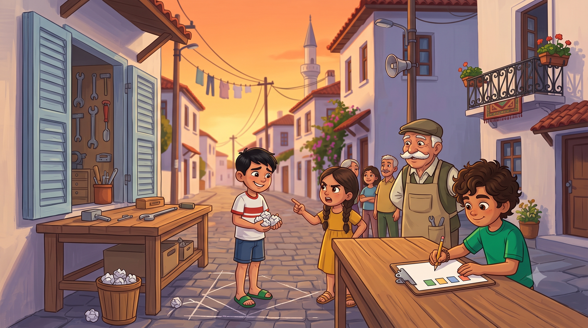
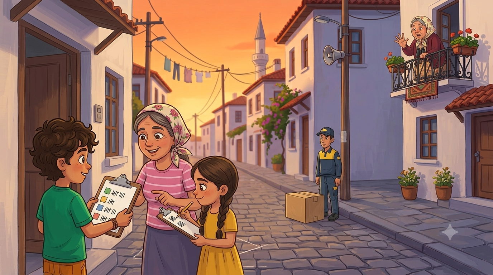

Parkın boş köşesine ne yapılacak? Kaydırak diyen kaydırak, bank diyen bank diye bağırıyor; meydan yine karıştı. Muhtar kararını verdi: "Bu mahallede karar bağırana göre değil, VERİYE göre alınacak!" Mahalle tarihinin ilk resmî anketi başlıyor — ama önce doğru soruyu sormayı öğrenmek gerek.
Belediye parkı yeniledi ama bir köşesi boş kaldı; "mahalle karar versin" demişler. İyi de bizim mahalle karar vermeyi bağırarak yapar. Meydanda toplanıldı: Emre "Basket potası!" diye bağırıyor, küçükler "Kaydırak!" diye tempo tutuyor, Mübeccel Teyze balkondan "Bank konacak, çardağı da olacak!" diye kararını çoktan vermiş, dedem de "Bir çiçek bahçesi olsa, sulaması bizden," diyordu. Herkes konuşuyordu, kimse duymuyordu. Horoz bile öttü; onun oyu sayılmadı.
Muhtar hoparlöre koştu, üç boğaz temizleme: "Sayın mahalleli! Bu mahallede karar, sesi çok çıkana göre DEĞİL, veriye göre alınacaktır! TÜİK nasıl bütün ülkeyi sayıyorsa, biz de mahallemizi sayacağız! ANKET yapılacaktır!" Meydanda bir sessizlik oldu. Sonra herkes birden "anket nedir?" diye birbirine sordu.
Muhtar bana döndü. Ben deftere uzandım bile. "Anket Genel Sorumlusu" — on birinci unvan. Elif kolları sıvadı: "Abi, buna istatistiksel araştırma denir ve dört adımı vardır: soruyu belirle, veriyi topla, görselleştir, yorumla. Merdiven gibi — hatırlıyor musun?" Hatırlıyordum. Bizim mahallede her şey ya merdiven ya terazi.

İlk iş: araştırma sorusu. Emre gönüllü oldu; Emre hep gönüllü olur, sorun da genelde burada başlar. İlk denemesi: "En güzel şey nedir?" Elif başını iki yana salladı: "Amaç belirsiz. 'Şey' ne, 'güzel' neye göre? Bu soruyla veri toplanmaz, felsefe toplanır." İkinci deneme: "Kaydırak süper olur, değil mi?" — "Yönlendirici! Cevabı sorunun içine koymuşsun; buna anket değil, propaganda denir." Üçüncü deneme: "Ayşe ne istiyor?" — "Tek kişiye sorulmaz! Bir kişinin cevabı veri değişkenliği taşımaz."
Emre pes etti: "İyi soru sormak, soru sormaktan zormuş." Dedem onayladı: "En zor zanaat odur evlat. Ustası az bulunur." Sonunda soruyu birlikte yazdık: "Parkın boş köşesine aşağıdakilerden hangisi yapılmalıdır? a) Kaydırak b) Basket potası c) Bank ve çardak ç) Çiçek bahçesi." Elif kontrol listesini işaretledi: Amaç net ✓ Veriyle cevaplanabilir ✓ Tek cevabı yok ✓ Herkese sorulabilir ✓ Yönlendirme yok ✓.
❓ Defterime not aldım: İyi bir araştırma sorusu: amacı nettir, veri toplanarak cevaplanabilir, tek bir cevabı yoktur, bir kişiye yönelik değildir ve yönlendirme yapmaz. "Değil mi?" ile biten soru anketten çıkarılır!

Anket günü geldi. Kurallarımızı koyduk: herkese aynı soru, aynı seçenekler; kimseye yorum yok, yönlendirme yok. Ekipler kuruldu: Elif'le ben üst mahalle, Emre'yle Ayşe alt mahalle. Elimizde çizelgeler, kapı kapı dolaştık. Her cevap için çetele attık: dört çizgi, beşincisi üstüne yan çizik — 𝍸. Dedem buna "beşli demet" diyor; sayması kolay oluyor.
Zorluklar da çıktı tabii. Cemal Usta "Fırının önüne de bir şey yapılsa?" diye kendi anketini başlatmaya kalktı; kibarca konumuza dönmesini rica ettik. Necmi kargo teslimatı arasında oy verdi: basket potası; "kolileri atmaca çalışırım," dedi. En büyük kriz Mübeccel Teyze'ydi: "Hepsi olsun," dedi. Anket kâğıdında "hepsi" seçeneği yoktu. Beş dakikalık müzakere sonunda bank ve çardakta karar kıldı; "ama bankın yönü çeşmeye bakacak," şerhini de sözlü olarak düştü. Şerhler ayrı deftere yazıldı.
📋 Defterime not aldım:Ankette herkese aynı soru sorulur, seçenekler nettir. Cevaplar çeteleyle tutulur (𝍸 = 5). Çeteleler sayılınca sıklık tablosu ortaya çıkar: hangi cevaptan kaç tane!

Akşam sayım yaptık; kasadaki para sayımından alışkınım, çetele daha kolay. Sıklık tablosu şöyle çıktı: Kaydırak 18, basket potası 15, bank ve çardak 24, çiçek bahçesi 12. Toplam 69 kişi — mahallenin neredeyse tamamı. Elif tabloya baktı: "En çok istenen bank ve çardak. Ama bak, kaydırakla arası sadece 6 oy; küçükler az kalsın kazanıyordu." Veriler konuşunca kavga susuyor; kimse "benim dediğim olacak" diyemedi, çünkü ortada sayılar vardı.
Muhtar sonucu hoparlörden ilan etti: "Sayın mahalleli! 69 kişilik veriye göre parkın köşesine BANK VE ÇARDAK yapılacaktır! İkinci gelen kaydırak, gelecek yılın bütçesine yazılmıştır! Veriye itiraz, veriyle yapılır!" O son cümleyi çok sevdim; defterimin kapağına yazdım. Mübeccel Teyze balkondan zafer işareti yaptı; çardağın yerini şimdiden seçmişti bile.
Dedem akşam demini alırken sordu: "E, dört adımın neresindesin?" Saydım: soruyu belirledik ✓, veriyi topladık ✓... "Üçüncü adım kaldı: bu tabloyu herkesin bir bakışta anlayacağı bir resme çevirmek. Grafik derler ona. O da başka bir günün işi." Ama önce muhtarın istediği bir şey vardı: anket sürecinin usule uygun yapıldığına dair denetim raporu...
Muhtar sürecin usule uygunluğunu soruyor. Her soruda doğru cevabı seç!
⭐ Puan: 0❓ Soru: 1/5
📋 Süreç Onaylandı!
Muhtar rapora mührü bastı: "Bu anket, usulüne uygun yapılmıştır." Bank ve çardak siparişi verildi. Mübeccel Teyze çardağın açılışında kurdele kesmek istediğini şimdiden bildirdi.
Kâşif Defteri — bugün öğrendiklerimiz:
• İstatistik = veri toplama, sınıflandırma, görselleştirme, yorumlama bilimi (TÜİK!)
• 4 adım: Soruyu belirle → Veriyi topla → Görselleştir → Yorumla
• İyi araştırma sorusu: net amaç, veriyle cevaplanabilir, tek cevabı yok, kişiye özel değil, yönlendirmesiz
• Ankette herkese aynı soru; cevaplar çetele ile (𝍸 = 5)
• Çetele → sıklık tablosu → yorum: veriler konuşunca kavga susar!